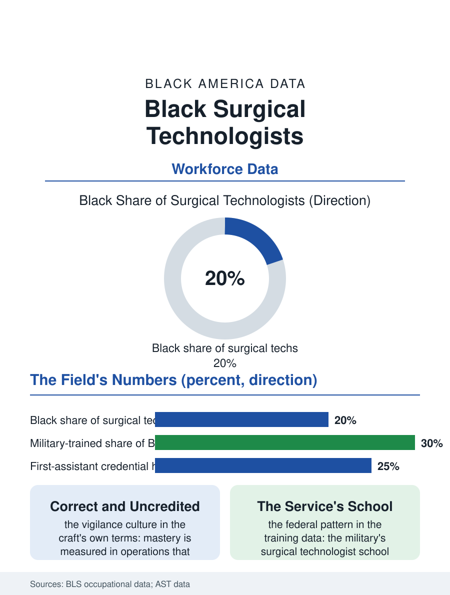

Black Employment
The Count: Black Surgical Technologists
Keeper of the field and the count, at a fifth of the operating room's most accessible credential. The surgical tech file.

The surgical technologist stands at the sterile field's edge for every operation in the country, keeper of the instruments, the counts, and the field's discipline, in an occupation whose training is a year to two and whose workforce is substantially more Black than the operating room's other credentialed tiers. This article reads the surgical technologist file.
The Field's Keeper
The craft's core is anticipation and purity in equal measure: the technologist scrubs, drapes, and passes, maintains the sterile field against the room's every entropy, and counts, the sponges and the sharps and the instruments, in the ritual whose failure is the retained object's catastrophe, so that the occupation's culture is a vigilance culture, its mastery measured in the operations that notice nothing, the field intact and the count correct at the close. The training file runs through the accredited certificate and associate programs of the community colleges and the hospital schools, the military's surgical technologist pipeline being, in the federal pattern, a disproportionate producer of the occupation's Black tier, the service's school converting the medic's aptitude into the civilian credential at the discharge's doorstep. The wage sits in the technician band's upper half, the call schedule, the night and weekend standby of the emergency's roster, being the occupation's tax and its overtime's source. The vendor and industry tier deserves the file's line as the occupation's commercial ladder: the instrument and implant companies hire the veteran technologist as the clinical specialist who stands in the room as the product's living manual, a role whose compensation finally prices the field's mastery at the market's rate and whose existence proves the room always knew what the technologist was worth, the hospital's pay scale being the last to admit it. The residency-style service academies of the large systems, built in the shortage's years to grow their own technologists, are the training file's newest form, their cohorts in the systems' own data the most diverse the occupation has produced, the grow-your-own logic of the education files arriving, as it has everywhere in this atlas, at the workforce whose shortage made the argument for it.
The Room's Hierarchy
The operating room's sociology is the file's internal account: the technologist's position in the room's formal hierarchy, below the surgeon and the anesthesia and the circulating nurse, against the field's practical dependence on her anticipation, a discrepancy the room's veterans describe in the same terms across the surgical files, the case flowing at the technologist's tempo when the pairing is known and at the stranger's friction when it is not. The specialty's ladder runs to the first assistant's credential, the technologist certified to suture and to retract as the surgeon's second pair of hands in the formal sense, and to the service line's coordination, the specialty's instruments and implants being a logistics empire whose masters are the veteran technologists the vendors recruit. The travel file has repriced the occupation as it has the nursing file's, the agency technologist's premium in the shortage markets making the staff position's retention the hospital's current problem in the pattern of every scarce pair of hands in the health files.
The Count
The surgical technologist file closes on the count, because the occupation's defining ritual is the audit performed aloud at the wound's closing, the numbers called and answered, a discipline whose integrity is the patient's invisible protection and the technologist's professional pride entire. In the atlas's terms the file is the operating room's version of the pattern: the credential accessible, the workforce fuller, the hierarchy's ceiling at the room's formal order, the mastery unmistakable to everyone who has watched a field run clean. The bureau counts the occupation in the hundred thousands. The file's last entry is the closing count's final number, correct, in the room where the Black technologist's hands have kept the field for the operation's length, the record of her work being, by the craft's design, that nothing in the record is hers at all, the operation's success filed under other names, which the file exists, in its small way, to correct. The preference card, the surgeon's tray as specified to the item, is the technologist's written craft, its accuracy the room's shorthand for her name.
More in Black Employment
The Black Unemployment Rate: The Two-to-One Pattern
Black unemployment runs at roughly twice the White rate — 5.5 percent against 3.3 percent in annual averages — a ratio stable across five decades of federal data. How it is measured and why it persists.
Black Median Weekly Earnings: The 80-Cent Ratio
Black full-time workers earn a median of about $900 a week — roughly 80 cents for every dollar White workers earn. The BLS earnings data by group, gender, and occupation.
Black Labor Force Participation: Working at National Rates
Black labor force participation runs at roughly the national rate — and Black women participate at higher rates than White women. The BLS participation data.
Source: Bureau of Labor Statistics occupational employment data; Association of Surgical Technologists workforce data.